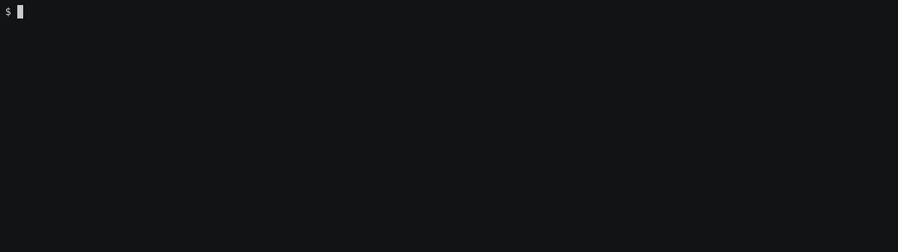

Capturing and variation
Using regular expressions or Cucumber Expressions for our step matching functions allows us:
- to capture values from a step and use them inside a test function;
- to match variations of a step with a single test function.
Regular expressions
Using a regular expression for a step matching function is possible with regex = attribute modifier:
extern crate cucumber; extern crate tokio; use cucumber::{World, given, then, when}; #[derive(Debug, Default)] struct Cat { pub hungry: bool, } impl Cat { fn feed(&mut self) { self.hungry = false; } } #[derive(Debug, Default, World)] pub struct AnimalWorld { cat: Cat, } #[given(regex = r"^a (hungry|satiated) cat$")] fn hungry_cat(world: &mut AnimalWorld, state: String) { match state.as_str() { "hungry" => world.cat.hungry = true, "satiated" => world.cat.hungry = false, _ => unreachable!(), } } #[when(regex = r"^I feed the cat \d+ times?$")] fn feed_cat(world: &mut AnimalWorld) { world.cat.feed(); } #[then("the cat is not hungry")] fn cat_is_fed(world: &mut AnimalWorld) { assert!(!world.cat.hungry); } #[tokio::main] async fn main() { AnimalWorld::run("tests/features/book/writing/capturing.feature").await; }
NOTE: We surround the regex with
^..$to ensure an exact match. This is much more useful when adding more and more steps, so they won't accidentally interfere with each other.

NOTE: Captured values are bold to indicate which part of a step is actually captured.
FromStr arguments
For matching a captured value we are not restricted to use only String. In fact, any type implementing a FromStr trait can be used as a step function argument (including primitive types).
extern crate cucumber; extern crate tokio; use std::str::FromStr; use cucumber::{World, given, then, when}; #[derive(Debug, Default)] struct Cat { pub hungry: State, } impl Cat { fn feed(&mut self) { self.hungry = State::Satiated; } } #[derive(Debug, Default)] enum State { Hungry, #[default] Satiated, } impl FromStr for State { type Err = String; fn from_str(s: &str) -> Result<Self, Self::Err> { Ok(match s { "hungry" => Self::Hungry, "satiated" => Self::Satiated, invalid => return Err(format!("Invalid `State`: {invalid}")), }) } } #[derive(Debug, Default, World)] pub struct AnimalWorld { cat: Cat, } #[given(regex = r"^a (hungry|satiated) cat$")] fn hungry_cat(world: &mut AnimalWorld, state: State) { world.cat.hungry = state; } #[when(regex = r"^I feed the cat (\d+) times?$")] fn feed_cat(world: &mut AnimalWorld, times: u8) { for _ in 0..times { world.cat.feed(); } } #[then("the cat is not hungry")] fn cat_is_fed(world: &mut AnimalWorld) { assert!(matches!(world.cat.hungry, State::Satiated)); } #[tokio::main] async fn main() { AnimalWorld::run("tests/features/book/writing/capturing.feature").await; }

Cucumber Expressions
Alternatively, a Cucumber Expression may be used to capture values. This is possible with expr = attribute modifier and parameters usage:
extern crate cucumber; extern crate tokio; use std::str::FromStr; use cucumber::{World, given, then, when}; #[derive(Debug, Default)] struct Cat { pub hungry: State, } impl Cat { fn feed(&mut self) { self.hungry = State::Satiated; } } #[derive(Debug, Default)] enum State { Hungry, #[default] Satiated, } impl FromStr for State { type Err = String; fn from_str(s: &str) -> Result<Self, Self::Err> { Ok(match s { "hungry" => Self::Hungry, "satiated" => Self::Satiated, invalid => return Err(format!("Invalid `State`: {invalid}")), }) } } #[derive(Debug, Default, World)] pub struct AnimalWorld { cat: Cat, } #[given(expr = "a {word} cat")] fn hungry_cat(world: &mut AnimalWorld, state: State) { world.cat.hungry = state; } #[when(expr = "I feed the cat {int} time(s)")] fn feed_cat(world: &mut AnimalWorld, times: u8) { for _ in 0..times { world.cat.feed(); } } #[then("the cat is not hungry")] fn cat_is_fed(world: &mut AnimalWorld) { assert!(matches!(world.cat.hungry, State::Satiated)); } #[tokio::main] async fn main() { AnimalWorld::run("tests/features/book/writing/capturing.feature").await; }
Cucumber Expressions are less powerful in terms of parsing and capturing values, but are much more readable than regular expressions, so it's worth to prefer using them for simple matching.
NOTE: Captured parameters are bold to indicate which part of a step is actually captured.
Custom parameters
Another useful advantage of using Cucumber Expressions is an ability to declare and reuse custom parameters in addition to default ones.
extern crate cucumber; extern crate tokio; use std::str::FromStr; use cucumber::{World, given, then, when}; use cucumber::Parameter; #[derive(Debug, Default)] struct Cat { pub hungry: State, } impl Cat { fn feed(&mut self) { self.hungry = State::Satiated; } } #[derive(Debug, Default, Parameter)] // NOTE: `name` is optional, by default the lowercased type name is implied. #[param(name = "hungriness", regex = "hungry|satiated")] enum State { Hungry, #[default] Satiated, } // NOTE: `Parameter` requires `FromStr` being implemented. impl FromStr for State { type Err = String; fn from_str(s: &str) -> Result<Self, Self::Err> { Ok(match s { "hungry" => Self::Hungry, "satiated" => Self::Satiated, invalid => return Err(format!("Invalid `State`: {invalid}")), }) } } #[derive(Debug, Default, World)] pub struct AnimalWorld { cat: Cat, } #[given(expr = "a {hungriness} cat")] fn hungry_cat(world: &mut AnimalWorld, state: State) { world.cat.hungry = state; } #[when(expr = "I feed the cat {int} time(s)")] fn feed_cat(world: &mut AnimalWorld, times: u8) { for _ in 0..times { world.cat.feed(); } } #[then("the cat is not hungry")] fn cat_is_fed(world: &mut AnimalWorld) { assert!(matches!(world.cat.hungry, State::Satiated)); } #[tokio::main] async fn main() { AnimalWorld::run("tests/features/book/writing/capturing.feature").await; }
NOTE: Using custom parameters allows declaring and reusing complicated and precise matches without a need to repeat them in different step matching functions.
TIP: In case regex of a custom parameter consists of several capturing groups, only the first non-empty match will be returned.
extern crate cucumber; extern crate tokio; use std::str::FromStr; use cucumber::{World, given, then, when}; use cucumber::Parameter; #[derive(Debug, Default)] struct Cat { pub hungry: Hungriness, } impl Cat { fn feed(&mut self) { self.hungry = Hungriness::Satiated; } } #[derive(Debug, Default, Eq, Parameter, PartialEq)] #[param(regex = "(hungry)|(satiated)|'([^']*)'")] // We want to capture without quotes ^^^^^^^ enum Hungriness { Hungry, #[default] Satiated, Other(String), } // NOTE: `Parameter` requires `FromStr` being implemented. impl FromStr for Hungriness { type Err = String; fn from_str(s: &str) -> Result<Self, Self::Err> { Ok(match s { "hungry" => Self::Hungry, "satiated" => Self::Satiated, other => Self::Other(other.to_owned()), }) } } #[derive(Debug, Default, World)] pub struct AnimalWorld { cat: Cat, } #[given(expr = "a {hungriness} cat")] fn hungry_cat(world: &mut AnimalWorld, hungry: Hungriness) { world.cat.hungry = hungry; } #[then(expr = "the cat is {string}")] fn cat_is(world: &mut AnimalWorld, other: String) { assert_eq!(world.cat.hungry, Hungriness::Other(other)); } #[when(expr = "I feed the cat {int} time(s)")] fn feed_cat(world: &mut AnimalWorld, times: u8) { for _ in 0..times { world.cat.feed(); } } #[then("the cat is not hungry")] fn cat_is_fed(world: &mut AnimalWorld) { assert_eq!(world.cat.hungry, Hungriness::Satiated); } #[tokio::main] async fn main() { AnimalWorld::run("tests/features/book/writing/capturing_multiple_groups.feature").await; }